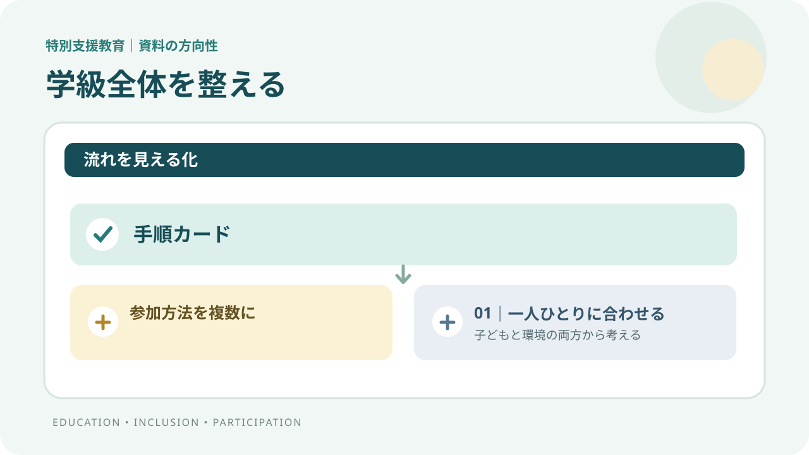

学級全体の授業・環境を整える
見通しを示す、情報を見やすくする、参加しやすい集団をつくる。
特別支援教育｜審議まとめを読む
支援を子どもだけの課題にせず、教室・授業・関わり方も整える。資料の方向性と、明日から考えられる授業案を分けて紹介します。
Canvaで制作した解説動画
動画を再生して、審議まとめの方向性と授業への提案を確認できます。
字幕はプレーヤーの字幕設定からオン・オフできます。通信量を抑えたい場合は、Wi-Fi接続での再生をおすすめします。

音声なしのスライド再生版です。動画を見られない場合の要点確認にご利用ください。
支援を重ねて考える
資料の図は、学びの場を機械的に選ぶ階段ではなく、学級全体の環境づくりと個別の手立てを組み合わせる考え方を示しています。
見通しを示す、情報を見やすくする、参加しやすい集団をつくる。
子どもの教育的ニーズや困難さの背景を捉え、教材・方法・関わり方を調整する。
必要性を本人・保護者と確認し、校内の組織や専門機関とも連携して考える。
各層は一律の進級順や「上ほど重い」という評価ではありません。資料に示された多様で連続性のある学びの場を、教育的ニーズに応じて検討します。
何を変える？その背景は？
子ども一人ひとりの自立と社会参加を見据え、授業を理解し活動に参加している実感を支える方向は引き続き重視されます。
基礎的環境整備、障害種ごとの配慮、合理的配慮の関係を分かりやすくし、通常の学級・通級・特別支援学級の指導を関連付ける案です。
在籍・利用する子どもが増える一方、通常の学級の工夫や個別支援、教師の専門性、校内連携が十分でない課題が示されています。
このページは2026年10月5日付の審議まとめを扱います。確定した学習指導要領の説明ではありません。
検索できる要点
授業への提案｜ここからは実践例
今日の流れ・終わり・選べる参加方法を、短い言葉や図で示す。
「何ができないか」だけでなく、どの場面・情報・環境で止まりやすいかを見る。
読み上げ、文字・図の提示、時間調整などを一緒に選び、効果を確かめて記録する。
これは審議まとめの方向性をもとにした授業への提案です。実際の支援は本人・保護者との対話、校内の手続、学校の状況に応じて検討してください。
読み違えないために
今回扱うのは、次期学習指導要領等に向けた審議段階のまとめです。通級で教科指導を行う特例、書き方の整理、資料中の支援モデルは、今後の制度設計に向けた提案や検討事項を含みます。
困難を子どもだけの中に見つけるのではなく、本人の感じ方と環境との関係を捉えます。必要な手立てを本人・保護者・学校が対話して調整する視点が示されています。
出典とページ
第2部第1章「特別支援教育」印刷頁114–123（PDF頁115–124）。基本的な考え方、重層的な支援、合理的配慮、通級、特別支援学級、自立活動、デジタル基盤、交流及び共同学習。
PDF頁111–113（印刷頁510–512）。重層的支援の図と、読字困難・難聴の事例。音声読み上げ、情報の視覚化、文字変換、授業の見通しなどを照合しました。
PDF頁156–157（印刷頁993–994）。学級活動・特別活動が、多様性・包摂性を尊重した生活づくりを支える位置付けを確認しました。
資料1/4は2026年10月5日付「次期学習指導要領等に向けた審議まとめ」です。引用・要約・授業案を区別し、授業案は公的な決定事項ではないと明記しています。